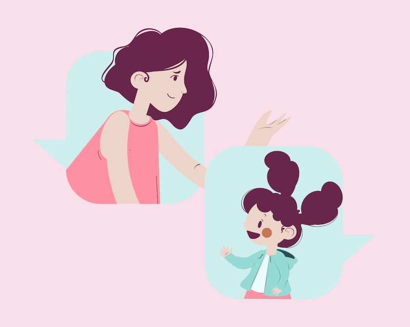
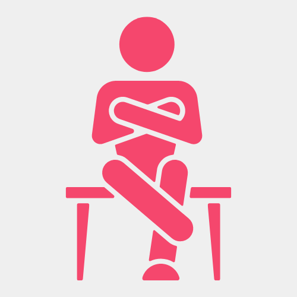

Parents:
How To Have A Difficult Conversation With Your Child

Being educated on a subject before sitting down for a conversation can be extremely helpful. Use this list of helpful hints and tips to improve how beneficial the conversation will for your child.
Stepping Stones
Don't Be Too Forceful
Don’t approach the topic head on like a lecture, it should be more of a conversation than a confrontation. Ask about what they think about Online Safety and their current views to get an idea of where they currently stand. If you are too forceful this could worry them or make them feel uncomfortable. The last thing you want is to be unapproachable. Additional information: Time your conversation. If it's been brought up at school or elswhere then it may be a good time to talk about it.
Stay balanced and Non judgemental
Be approachable. If they know you are understandable and non-judgmental, they will be more inclined to tell you how they feel about a situation they might be in Additional Information: It may be a good idea to have show some examples of online safety. Online videos, Tv shows, or movies that discuss the topic may be more beneficial if you do not have first hand experience yourself The CBBC website has stories and tips for staying safe online from those who have had experience.
Platforms
It can be hard to keep up to date with all the games, websites, and apps that your teenager might be using but to understand the dangers you also have to know what apps and programs they are using. Parent zone is a good website that provides detailed information on an online service your child is using.
Take your time
There is no time limit or number of conversations that you can have. Be aware of when you are having this conversation to look at your childs body language. If they seem tired out or frustrated, it may not be a good time to talk. Try and have a conversation when they are ready.
Listen
Teenagers most likely know more than you might excpect. It’s important to listen to them as they will probably educate you! Ask what they already know before jumping to any conclusions. Not treating them like they do not know anything will make them repect you more.
Body Language
Make sure you are approachable. Remember you want your child to feel comfortable with coming to you with any issues they might be having online so you can help them. When you have the conversation, you must remain calm throughout and not let your emotions get the best of you. Additional Information: The conversation may end up not going the way you expected it to, and that can can be quite disheartening. While theres time, practice the conversation. Think through what you want to say to resolve the situation.
